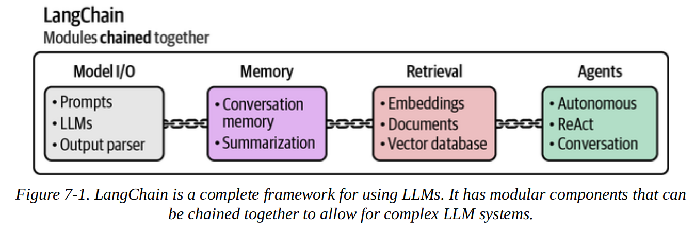
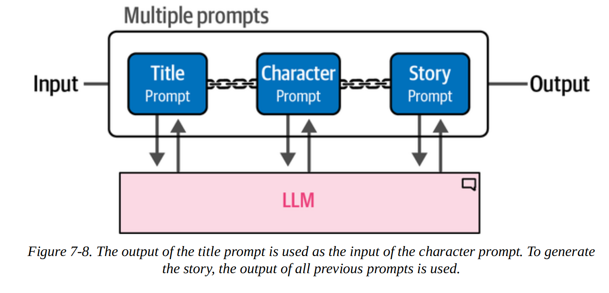
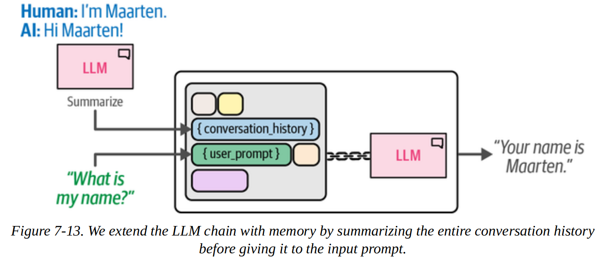
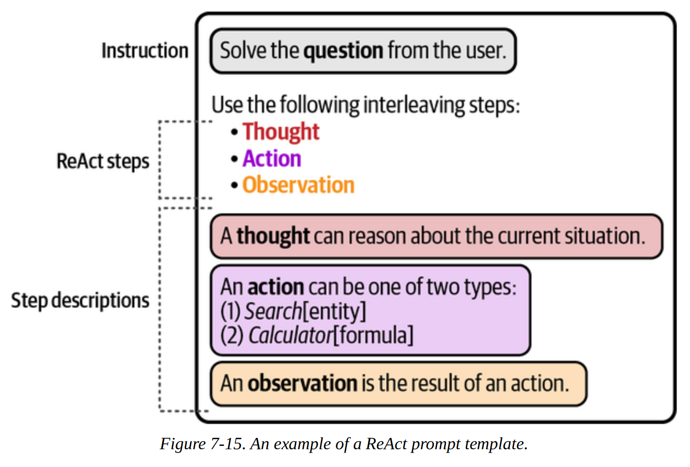

!wget https://huggingface.co/microsoft/Phi-3-mini-4k-instructgguf/resolve/main/Phi-3-mini-4k-instruct-fp16.ggufAdvanced Text Generation Techniques and Tools
Going beyond prompt engineering, there are several areas where we can improve the quality of generated text:
- Model I/O
- Memory
- Agents
- Chains
Langchain is a framework that provides useful abstractions for these kinds of things and helps connect them together. We will use LangChain here, but alternatives include LlamaIndex, DSPy and Haystack.

1. Model I/O
1.1. Quantization
We can load quantized models using the GGUF file format which is a binary format optimised for fast loading of pytorch models.
The benefit of a quantized model is a smaller size in memory while retaining most of the original information. For example, if the model was trained using 32-bit floats for parameters, we can use 16-bit floats instead. This reduces the memory requirement but also reduces the precision. Often this trade-off is worthwhile.
This page goes into detail on the mechanics of quantisation.
The “best” model is constantly changing, so we can refer to the Open LLM leaderboard.
We can download a 16-bit quantized version of the Phi-3 mini model from HuggingFace.
Then we can use LangChain to load the GGUF file.
Note: an alternative is to use the langchain_huggingface library.
# This cell *should* work, but due to some funkiness with incompatible langchain vs llama versions (I think)
# it's easier to just create a custom LangChain wrapper in the following cell.
from langchain import LlamaCpp
# Make sure model_path points at the file location of the GGUF file
MODEL_DIR = "/Users/gurpreetjohl/workspace/python/ml-practice/ml-practice/models/"
MODEL_NAME = "Phi-3-mini-4k-instruct-fp16.gguf"
model_path = MODEL_DIR+MODEL_NAME
llm = LlamaCpp(
model_path=MODEL_DIR+MODEL_NAME,
n_gpu_layers=-1,
max_tokens=500,
n_ctx=2048,
seed=42,
verbose=False
)/Users/gurpreetjohl/miniconda3/envs/thellmbook/lib/python3.10/site-packages/langchain_community/llms/__init__.py:312: LangChainDeprecationWarning: As of langchain-core 0.3.0, LangChain uses pydantic v2 internally. The langchain_core.pydantic_v1 module was a compatibility shim for pydantic v1, and should no longer be used. Please update the code to import from Pydantic directly.
For example, replace imports like: `from langchain_core.pydantic_v1 import BaseModel`
with: `from pydantic import BaseModel`
or the v1 compatibility namespace if you are working in a code base that has not been fully upgraded to pydantic 2 yet. from pydantic.v1 import BaseModel
from langchain_community.llms.llamacpp import LlamaCppValidationError: 1 validation error for LlamaCpp
client
Field required [type=missing, input_value={'model_path': '/Users/gu...': 42, 'verbose': False}, input_type=dict]
For further information visit https://errors.pydantic.dev/2.10/v/missingfrom typing import Any, Dict, List, Optional
from langchain_core.language_models import LLM
from llama_cpp import Llama
class CustomLlamaLLM(LLM):
model_path: str
n_gpu_layers: int = -1
max_tokens: int = 500
n_ctx: int = 2048
seed: Optional[int] = 42
verbose: bool = False
client: Any = None
def __init__(self, **kwargs):
super().__init__(**kwargs)
self.client = Llama(
model_path=self.model_path,
n_gpu_layers=self.n_gpu_layers,
max_tokens=self.max_tokens,
n_ctx=self.n_ctx,
seed=self.seed,
verbose=self.verbose
)
@property
def _llm_type(self) -> str:
return "CustomLlama"
def _call(self, prompt: str, stop: Optional[List[str]] = None) -> str:
response = self.client(prompt, stop=stop)
return response["choices"][0]["text"]
# Instantiate the custom LLM class
llm = CustomLlamaLLM(
model_path=model_path,
n_gpu_layers=-1,
max_tokens=500,
n_ctx=2048,
seed=42,
verbose=True
)llama_model_loader: loaded meta data with 23 key-value pairs and 195 tensors from /Users/gurpreetjohl/workspace/python/ml-practice/ml-practice/models/Phi-3-mini-4k-instruct-fp16.gguf (version GGUF V3 (latest))
llama_model_loader: Dumping metadata keys/values. Note: KV overrides do not apply in this output.
llama_model_loader: - kv 0: general.architecture str = phi3
llama_model_loader: - kv 1: general.name str = Phi3
llama_model_loader: - kv 2: phi3.context_length u32 = 4096
llama_model_loader: - kv 3: phi3.embedding_length u32 = 3072
llama_model_loader: - kv 4: phi3.feed_forward_length u32 = 8192
llama_model_loader: - kv 5: phi3.block_count u32 = 32
llama_model_loader: - kv 6: phi3.attention.head_count u32 = 32
llama_model_loader: - kv 7: phi3.attention.head_count_kv u32 = 32
llama_model_loader: - kv 8: phi3.attention.layer_norm_rms_epsilon f32 = 0.000010
llama_model_loader: - kv 9: phi3.rope.dimension_count u32 = 96
llama_model_loader: - kv 10: general.file_type u32 = 1
llama_model_loader: - kv 11: tokenizer.ggml.model str = llama
llama_model_loader: - kv 12: tokenizer.ggml.pre str = default
llama_model_loader: - kv 13: tokenizer.ggml.tokens arr[str,32064] = ["<unk>", "<s>", "</s>", "<0x00>", "<...
llama_model_loader: - kv 14: tokenizer.ggml.scores arr[f32,32064] = [0.000000, 0.000000, 0.000000, 0.0000...
llama_model_loader: - kv 15: tokenizer.ggml.token_type arr[i32,32064] = [2, 3, 3, 6, 6, 6, 6, 6, 6, 6, 6, 6, ...
llama_model_loader: - kv 16: tokenizer.ggml.bos_token_id u32 = 1
llama_model_loader: - kv 17: tokenizer.ggml.eos_token_id u32 = 32000
llama_model_loader: - kv 18: tokenizer.ggml.unknown_token_id u32 = 0
llama_model_loader: - kv 19: tokenizer.ggml.padding_token_id u32 = 32000
llama_model_loader: - kv 20: tokenizer.ggml.add_bos_token bool = true
llama_model_loader: - kv 21: tokenizer.ggml.add_eos_token bool = false
llama_model_loader: - kv 22: tokenizer.chat_template str = {{ bos_token }}{% for message in mess...
llama_model_loader: - type f32: 65 tensors
llama_model_loader: - type f16: 130 tensors
llm_load_vocab: special tokens cache size = 323
llm_load_vocab: token to piece cache size = 0.1687 MB
llm_load_print_meta: format = GGUF V3 (latest)
llm_load_print_meta: arch = phi3
llm_load_print_meta: vocab type = SPM
llm_load_print_meta: n_vocab = 32064
llm_load_print_meta: n_merges = 0
llm_load_print_meta: n_ctx_train = 4096
llm_load_print_meta: n_embd = 3072
llm_load_print_meta: n_head = 32
llm_load_print_meta: n_head_kv = 32
llm_load_print_meta: n_layer = 32
llm_load_print_meta: n_rot = 96
llm_load_print_meta: n_embd_head_k = 96
llm_load_print_meta: n_embd_head_v = 96
llm_load_print_meta: n_gqa = 1
llm_load_print_meta: n_embd_k_gqa = 3072
llm_load_print_meta: n_embd_v_gqa = 3072
llm_load_print_meta: f_norm_eps = 0.0e+00
llm_load_print_meta: f_norm_rms_eps = 1.0e-05
llm_load_print_meta: f_clamp_kqv = 0.0e+00
llm_load_print_meta: f_max_alibi_bias = 0.0e+00
llm_load_print_meta: f_logit_scale = 0.0e+00
llm_load_print_meta: n_ff = 8192
llm_load_print_meta: n_expert = 0
llm_load_print_meta: n_expert_used = 0
llm_load_print_meta: causal attn = 1
llm_load_print_meta: pooling type = 0
llm_load_print_meta: rope type = 2
llm_load_print_meta: rope scaling = linear
llm_load_print_meta: freq_base_train = 10000.0
llm_load_print_meta: freq_scale_train = 1
llm_load_print_meta: n_ctx_orig_yarn = 4096
llm_load_print_meta: rope_finetuned = unknown
llm_load_print_meta: ssm_d_conv = 0
llm_load_print_meta: ssm_d_inner = 0
llm_load_print_meta: ssm_d_state = 0
llm_load_print_meta: ssm_dt_rank = 0
llm_load_print_meta: model type = 3B
llm_load_print_meta: model ftype = F16
llm_load_print_meta: model params = 3.82 B
llm_load_print_meta: model size = 7.12 GiB (16.00 BPW)
llm_load_print_meta: general.name = Phi3
llm_load_print_meta: BOS token = 1 '<s>'
llm_load_print_meta: EOS token = 32000 '<|endoftext|>'
llm_load_print_meta: UNK token = 0 '<unk>'
llm_load_print_meta: PAD token = 32000 '<|endoftext|>'
llm_load_print_meta: LF token = 13 '<0x0A>'
llm_load_print_meta: EOT token = 32007 '<|end|>'
llm_load_tensors: ggml ctx size = 0.22 MiB
ggml_backend_metal_log_allocated_size: allocated buffer, size = 7100.64 MiB, (23176.83 / 10922.67)ggml_backend_metal_log_allocated_size: warning: current allocated size is greater than the recommended max working set size
llm_load_tensors: offloading 32 repeating layers to GPU
llm_load_tensors: offloading non-repeating layers to GPU
llm_load_tensors: offloaded 33/33 layers to GPU
llm_load_tensors: CPU buffer size = 187.88 MiB
llm_load_tensors: Metal buffer size = 7100.64 MiB
....................................................................................
llama_new_context_with_model: n_ctx = 2048
llama_new_context_with_model: n_batch = 512
llama_new_context_with_model: n_ubatch = 512
llama_new_context_with_model: flash_attn = 0
llama_new_context_with_model: freq_base = 10000.0
llama_new_context_with_model: freq_scale = 1
ggml_metal_init: allocating
ggml_metal_init: found device: Apple M2
ggml_metal_init: picking default device: Apple M2
ggml_metal_init: using embedded metal library
ggml_metal_init: GPU name: Apple M2
ggml_metal_init: GPU family: MTLGPUFamilyApple8 (1008)
ggml_metal_init: GPU family: MTLGPUFamilyCommon3 (3003)
ggml_metal_init: GPU family: MTLGPUFamilyMetal3 (5001)
ggml_metal_init: simdgroup reduction support = true
ggml_metal_init: simdgroup matrix mul. support = true
ggml_metal_init: hasUnifiedMemory = true
ggml_metal_init: recommendedMaxWorkingSetSize = 11453.25 MB
llama_kv_cache_init: Metal KV buffer size = 768.00 MiB
llama_new_context_with_model: KV self size = 768.00 MiB, K (f16): 384.00 MiB, V (f16): 384.00 MiB
llama_new_context_with_model: CPU output buffer size = 0.12 MiB
llama_new_context_with_model: Metal compute buffer size = 168.00 MiB
llama_new_context_with_model: CPU compute buffer size = 10.01 MiB
llama_new_context_with_model: graph nodes = 1286
llama_new_context_with_model: graph splits = 2
AVX = 0 | AVX_VNNI = 0 | AVX2 = 0 | AVX512 = 0 | AVX512_VBMI = 0 | AVX512_VNNI = 0 | AVX512_BF16 = 0 | FMA = 0 | NEON = 1 | SVE = 0 | ARM_FMA = 1 | F16C = 0 | FP16_VA = 1 | WASM_SIMD = 0 | BLAS = 1 | SSE3 = 0 | SSSE3 = 0 | VSX = 0 | MATMUL_INT8 = 0 | LLAMAFILE = 1 |
Model metadata: {'tokenizer.chat_template': "{{ bos_token }}{% for message in messages %}{% if (message['role'] == 'user') %}{{'<|user|>' + '\n' + message['content'] + '<|end|>' + '\n' + '<|assistant|>' + '\n'}}{% elif (message['role'] == 'assistant') %}{{message['content'] + '<|end|>' + '\n'}}{% endif %}{% endfor %}", 'tokenizer.ggml.add_eos_token': 'false', 'tokenizer.ggml.add_bos_token': 'true', 'tokenizer.ggml.padding_token_id': '32000', 'tokenizer.ggml.unknown_token_id': '0', 'tokenizer.ggml.eos_token_id': '32000', 'tokenizer.ggml.pre': 'default', 'general.file_type': '1', 'phi3.rope.dimension_count': '96', 'tokenizer.ggml.bos_token_id': '1', 'phi3.attention.layer_norm_rms_epsilon': '0.000010', 'phi3.attention.head_count_kv': '32', 'phi3.attention.head_count': '32', 'tokenizer.ggml.model': 'llama', 'phi3.block_count': '32', 'general.architecture': 'phi3', 'phi3.feed_forward_length': '8192', 'phi3.embedding_length': '3072', 'general.name': 'Phi3', 'phi3.context_length': '4096'}
Available chat formats from metadata: chat_template.default
Using gguf chat template: {{ bos_token }}{% for message in messages %}{% if (message['role'] == 'user') %}{{'<|user|>' + '
' + message['content'] + '<|end|>' + '
' + '<|assistant|>' + '
'}}{% elif (message['role'] == 'assistant') %}{{message['content'] + '<|end|>' + '
'}}{% endif %}{% endfor %}
Using chat eos_token: <|endoftext|>
Using chat bos_token: <s>
ggml_metal_free: deallocating2. Chains
2.1. Basic Prompt Chain
In LangChain, we use the invoke function to generate an output.
However, each model requires a specific prompt template. If we blindly called invoke on our model, we get no response:
llm.invoke("Hi! My name is Gurp. What is 1 + 1?")
llama_print_timings: load time = 840.73 ms
llama_print_timings: sample time = 0.89 ms / 1 runs ( 0.89 ms per token, 1123.60 tokens per second)
llama_print_timings: prompt eval time = 840.28 ms / 18 tokens ( 46.68 ms per token, 21.42 tokens per second)
llama_print_timings: eval time = 0.00 ms / 1 runs ( 0.00 ms per token, inf tokens per second)
llama_print_timings: total time = 841.04 ms / 19 tokens''This is where the LangChain abstractions come in useful.
We will create a simple chain with a single link:
flowchart LR
subgraph PromptChain
B(Prompt template) --> C[LLM]
end
A(User prompt) --> B
C --> D(Output)
For our particular case, Phi-3 prompts require start, end , user and assistant tokens.
from langchain import PromptTemplate
# Create a prompt template with the "input_prompt" variable
template = """<s><|user|> {input_prompt}<|end|> <|assistant|>"""
prompt = PromptTemplate(template=template, input_variables=["input_prompt"])We can then create a chain by chaining the prompt and LLM together. Then we can call invoke and get the intended text generation.
basic_chain = prompt | llm
basic_chain.invoke({"input_prompt": "Hi! My name is Gurp. What is 1 + 1?"})llama_tokenize_internal: Added a BOS token to the prompt as specified by the model but the prompt also starts with a BOS token. So now the final prompt starts with 2 BOS tokens. Are you sure this is what you want?
/Users/gurpreetjohl/miniconda3/envs/thellmbook/lib/python3.10/site-packages/llama_cpp/llama.py:1031: RuntimeWarning: Detected duplicate leading "<s>" in prompt, this will likely reduce response quality, consider removing it...
inputs = [input]
Llama.generate: prefix-match hit
llama_print_timings: load time = 840.73 ms
llama_print_timings: sample time = 5.89 ms / 16 runs ( 0.37 ms per token, 2716.93 tokens per second)
llama_print_timings: prompt eval time = 295.30 ms / 21 tokens ( 14.06 ms per token, 71.11 tokens per second)
llama_print_timings: eval time = 1349.54 ms / 15 runs ( 89.97 ms per token, 11.11 tokens per second)
llama_print_timings: total time = 1668.23 ms / 36 tokens' Hello Gurp! The answer to 1 + 1 is 2'Note that we just passed the entire input_prompt as a variable to the chain, but we can define other variables. For example, if we wanted a more specialised use case where we don’t give te user as much flexibility, we can pre-define some of the prompt.
template = "Create a funny name for a business that sells {product}."
name_prompt = PromptTemplate(template=template, input_variables=["product"])2.2. Multiple Prompt Chain
If we have more complex prompts or use cases, we can split the task into smaller subtasks that run sequentially. Each link in the chain deals with a specific subtask.
flowchart LR
subgraph MultiPromptChain
B1(Prompt 1) --> B2(Prompt 2)
B1 <--> C[LLM]
B2 <--> C
end
A(User input) --> B1
B2 --> D(Output)
As an example, we can prompt the LLM to create a story. First we ask it for a title based on the user prompt, then characters based on the title, then a story based on the characters and title. The first link is the only one that requires user input.

from langchain import LLMChain
# Create a chain for the title of our story
title_template = """<s><|user|> Create a title for a story about {summary}. Only return the title. <|end|> <|assistant|>"""
title_prompt = PromptTemplate(template=title_template, input_variables= ["summary"])
title = LLMChain(llm=llm, prompt=title_prompt, output_key="title")
# Create a chain for the character description using the summary and title
character_template = """<s><|user|> Describe the main character of a story about {summary} with the title {title}. Use only two sentences.<|end|> <|assistant|>"""
character_prompt = PromptTemplate(template=character_template, input_variables=["summary", "title"])
character = LLMChain(llm=llm, prompt=character_prompt, output_key="character")
# Create a chain for the story using the summary, title, and character description
story_template = """<s><|user|> Create a story about {summary} with the title {title}. The main character is: {character}. Only return the story and it cannot be longer than one paragraph. <|end|> <|assistant|>"""
story_prompt = PromptTemplate(template=story_template, input_variables=["summary", "title", "character"])
story = LLMChain(llm=llm, prompt=story_prompt, output_key="story")
# Combine all three components to create the full chain
llm_chain = title | character | storyggml_metal_free: deallocatingNow we can invoke the chain just like before:
llm_chain.invoke({"summary": "a dog that can smell danger"})llama_tokenize_internal: Added a BOS token to the prompt as specified by the model but the prompt also starts with a BOS token. So now the final prompt starts with 2 BOS tokens. Are you sure this is what you want?
/Users/gurpreetjohl/miniconda3/envs/thellmbook/lib/python3.10/site-packages/llama_cpp/llama.py:1031: RuntimeWarning: Detected duplicate leading "<s>" in prompt, this will likely reduce response quality, consider removing it...
inputs = [input]
Llama.generate: prefix-match hit
llama_print_timings: load time = 840.73 ms
llama_print_timings: sample time = 1.34 ms / 16 runs ( 0.08 ms per token, 11958.15 tokens per second)
llama_print_timings: prompt eval time = 295.27 ms / 23 tokens ( 12.84 ms per token, 77.89 tokens per second)
llama_print_timings: eval time = 1424.98 ms / 15 runs ( 95.00 ms per token, 10.53 tokens per second)
llama_print_timings: total time = 1725.28 ms / 38 tokens
llama_tokenize_internal: Added a BOS token to the prompt as specified by the model but the prompt also starts with a BOS token. So now the final prompt starts with 2 BOS tokens. Are you sure this is what you want?
/Users/gurpreetjohl/miniconda3/envs/thellmbook/lib/python3.10/site-packages/llama_cpp/llama.py:1031: RuntimeWarning: Detected duplicate leading "<s>" in prompt, this will likely reduce response quality, consider removing it...
inputs = [input]
Llama.generate: prefix-match hit
llama_print_timings: load time = 840.73 ms
llama_print_timings: sample time = 1.97 ms / 16 runs ( 0.12 ms per token, 8109.48 tokens per second)
llama_print_timings: prompt eval time = 190.41 ms / 44 tokens ( 4.33 ms per token, 231.08 tokens per second)
llama_print_timings: eval time = 1315.12 ms / 15 runs ( 87.67 ms per token, 11.41 tokens per second)
llama_print_timings: total time = 1511.43 ms / 59 tokens
llama_tokenize_internal: Added a BOS token to the prompt as specified by the model but the prompt also starts with a BOS token. So now the final prompt starts with 2 BOS tokens. Are you sure this is what you want?
/Users/gurpreetjohl/miniconda3/envs/thellmbook/lib/python3.10/site-packages/llama_cpp/llama.py:1031: RuntimeWarning: Detected duplicate leading "<s>" in prompt, this will likely reduce response quality, consider removing it...
inputs = [input]
Llama.generate: prefix-match hit
llama_print_timings: load time = 840.73 ms
llama_print_timings: sample time = 1.48 ms / 16 runs ( 0.09 ms per token, 10803.51 tokens per second)
llama_print_timings: prompt eval time = 290.88 ms / 70 tokens ( 4.16 ms per token, 240.65 tokens per second)
llama_print_timings: eval time = 1480.88 ms / 15 runs ( 98.73 ms per token, 10.13 tokens per second)
llama_print_timings: total time = 1777.98 ms / 85 tokens{'summary': 'a dog that can smell danger',
'title': ' "Scent of Peril: The Canine Detective\'s N',
'character': ' In the heartwarming tale, Scent of Peril follows Max,',
'story': ' In a quaint suburban neighborhood, there lived an extraordinary German Shepherd'}3. Memory
By default, most LLMs will not remember what was said previously in the conversation. For example, if you give your name in one prompt, it will not be able to recall it later.
# Let's give the LLM our name
basic_chain.invoke({"input_prompt": "Hi! My name is Gurp. What is 1 + 1?"})llama_tokenize_internal: Added a BOS token to the prompt as specified by the model but the prompt also starts with a BOS token. So now the final prompt starts with 2 BOS tokens. Are you sure this is what you want?
/Users/gurpreetjohl/miniconda3/envs/thellmbook/lib/python3.10/site-packages/llama_cpp/llama.py:1031: RuntimeWarning: Detected duplicate leading "<s>" in prompt, this will likely reduce response quality, consider removing it...
inputs = [input]
Llama.generate: prefix-match hit
llama_print_timings: load time = 840.73 ms
llama_print_timings: sample time = 2.43 ms / 16 runs ( 0.15 ms per token, 6573.54 tokens per second)
llama_print_timings: prompt eval time = 286.44 ms / 19 tokens ( 15.08 ms per token, 66.33 tokens per second)
llama_print_timings: eval time = 1401.11 ms / 15 runs ( 93.41 ms per token, 10.71 tokens per second)
llama_print_timings: total time = 1694.51 ms / 34 tokens' Hello Gurp! The answer to 1 + 1 is 2'# Next, we ask the LLM to reproduce the name
basic_chain.invoke({"input_prompt": "What is my name?"})llama_tokenize_internal: Added a BOS token to the prompt as specified by the model but the prompt also starts with a BOS token. So now the final prompt starts with 2 BOS tokens. Are you sure this is what you want?
/Users/gurpreetjohl/miniconda3/envs/thellmbook/lib/python3.10/site-packages/llama_cpp/llama.py:1031: RuntimeWarning: Detected duplicate leading "<s>" in prompt, this will likely reduce response quality, consider removing it...
inputs = [input]
Llama.generate: prefix-match hit
llama_print_timings: load time = 840.73 ms
llama_print_timings: sample time = 3.35 ms / 16 runs ( 0.21 ms per token, 4771.85 tokens per second)
llama_print_timings: prompt eval time = 255.48 ms / 7 tokens ( 36.50 ms per token, 27.40 tokens per second)
llama_print_timings: eval time = 1341.37 ms / 15 runs ( 89.42 ms per token, 11.18 tokens per second)
llama_print_timings: total time = 1606.10 ms / 22 tokens" I'm unable to determine your name as I don't have access to"Models are stateless; they do not store memory. We can add specific types of memory to the chain to help it “remember” conversations:
- Conversation buffer
- Conversation summary
3.1. Conversation Buffer
The simplest way we can force the LLM to remember previous conversation is by passing the full conversation history in our prompt.
This approach is called conversation buffer memory. We update our prompt with the history of the chat.
3.1.1. Simple Conversation Buffer
# Create an updated prompt template to include a chat history
template = """<s><|user|>Current conversation:{chat_history} {input_prompt}<|end|> <|assistant|>"""
prompt = PromptTemplate(template=template, input_variables=["input_prompt", "chat_history"])Next, we create a ConversationBufferMemory link in the chain that will store the conversations we have previously had with the LLM.
from langchain.memory import ConversationBufferMemory
# Define the type of memory we will use
memory = ConversationBufferMemory(memory_key="chat_history")
# Chain the LLM, prompt, and memory together
llm_chain = LLMChain(prompt=prompt, llm=llm, memory=memory)We can verify if this has worked by seeing if it now remembers our name in later prompts:
# Generate a conversation and ask a basic question
llm_chain.invoke({"input_prompt": "Hi! My name is Gurp. What is 1 + 1?"})llama_tokenize_internal: Added a BOS token to the prompt as specified by the model but the prompt also starts with a BOS token. So now the final prompt starts with 2 BOS tokens. Are you sure this is what you want?
/Users/gurpreetjohl/miniconda3/envs/thellmbook/lib/python3.10/site-packages/llama_cpp/llama.py:1031: RuntimeWarning: Detected duplicate leading "<s>" in prompt, this will likely reduce response quality, consider removing it...
inputs = [input]
Llama.generate: prefix-match hit
llama_print_timings: load time = 840.73 ms
llama_print_timings: sample time = 5.11 ms / 16 runs ( 0.32 ms per token, 3129.89 tokens per second)
llama_print_timings: prompt eval time = 262.37 ms / 19 tokens ( 13.81 ms per token, 72.42 tokens per second)
llama_print_timings: eval time = 1334.30 ms / 15 runs ( 88.95 ms per token, 11.24 tokens per second)
llama_print_timings: total time = 1608.21 ms / 34 tokens{'input_prompt': 'Hi! My name is Gurp. What is 1 + 1?',
'chat_history': '',
'text': ' Hello, Gurp! The answer to 1 + 1 is '}# Does the LLM remember my name?
response = llm_chain.invoke({"input_prompt": "What is my name?"})
print(response)llama_tokenize_internal: Added a BOS token to the prompt as specified by the model but the prompt also starts with a BOS token. So now the final prompt starts with 2 BOS tokens. Are you sure this is what you want?
/Users/gurpreetjohl/miniconda3/envs/thellmbook/lib/python3.10/site-packages/llama_cpp/llama.py:1031: RuntimeWarning: Detected duplicate leading "<s>" in prompt, this will likely reduce response quality, consider removing it...
inputs = [input]
Llama.generate: prefix-match hit
llama_print_timings: load time = 840.73 ms
llama_print_timings: sample time = 1.28 ms / 16 runs ( 0.08 ms per token, 12539.18 tokens per second)
llama_print_timings: prompt eval time = 344.80 ms / 47 tokens ( 7.34 ms per token, 136.31 tokens per second)
llama_print_timings: eval time = 1425.89 ms / 15 runs ( 95.06 ms per token, 10.52 tokens per second)
llama_print_timings: total time = 1775.85 ms / 62 tokens{'input_prompt': 'What is my name?', 'chat_history': 'Human: Hi! My name is Gurp. What is 1 + 1?\nAI: Hello, Gurp! The answer to 1 + 1 is ', 'text': ' Hi Gurp! The answer to 1 + 1 is 2'}llm_chain.invoke({"input_prompt": "What is my name?"})llama_tokenize_internal: Added a BOS token to the prompt as specified by the model but the prompt also starts with a BOS token. So now the final prompt starts with 2 BOS tokens. Are you sure this is what you want?
/Users/gurpreetjohl/miniconda3/envs/thellmbook/lib/python3.10/site-packages/llama_cpp/llama.py:1031: RuntimeWarning: Detected duplicate leading "<s>" in prompt, this will likely reduce response quality, consider removing it...
inputs = [input]
Llama.generate: prefix-match hit
llama_print_timings: load time = 840.73 ms
llama_print_timings: sample time = 6.22 ms / 16 runs ( 0.39 ms per token, 2571.93 tokens per second)
llama_print_timings: prompt eval time = 346.93 ms / 36 tokens ( 9.64 ms per token, 103.77 tokens per second)
llama_print_timings: eval time = 1359.76 ms / 15 runs ( 90.65 ms per token, 11.03 tokens per second)
llama_print_timings: total time = 1721.41 ms / 51 tokens{'input_prompt': 'What is my name?',
'chat_history': 'Human: Hi! My name is Gurp. What is 1 + 1?\nAI: Hello, Gurp! The answer to 1 + 1 is \nHuman: What is my name?\nAI: Hi Gurp! The answer to 1 + 1 is 2',
'text': " Hi Gurp! You're asking your own name; I am an"}3.1.2 Windowed Conversation Buffer
As the conversation goes on, the size of the chat history grows until eventually it may exceed the token limit.
One approach to work around this is to only hold the last \(k\) conversations in memory rather than the entire history.
from langchain.memory import ConversationBufferWindowMemory
# Retain only the last 2 conversations in memory
memory = ConversationBufferWindowMemory(k=2, memory_key="chat_history")
# Chain the LLM, prompt, and memory together
llm_chain = LLMChain(prompt=prompt, llm=llm, memory=memory)/var/folders/8k/8jqhnfbd1t99blb07r1hs5440000gn/T/ipykernel_47761/3936398832.py:4: LangChainDeprecationWarning: Please see the migration guide at: https://python.langchain.com/docs/versions/migrating_memory/
memory = ConversationBufferWindowMemory(k=2, memory_key="chat_history")This approach is not ideal for longer conversations. An alternative is to summarise the chat history to fit in the token limit, rather than truncating it.
3.2. Conversation Summary
This approach uses an LLM to summarise the main points of the history so far to reduce the number of tokens required to pass to the main LLM.
The “summary LLM” can be a different model to our “main LLM”. We may want to use a smaller LLM for the “easier” task of summarisation to speed up computation.
There will now be two LLM calls per invocation: the user prompt and the summarisation prompt.

# Create a summary prompt template
summary_prompt_template = """
<s><|user|>Summarize the conversations and update with the new lines.
Current summary: {summary} new lines of conversation: {new_lines}
New summary:<|end|> <|assistant|>
"""
summary_prompt = PromptTemplate(
input_variables=["new_lines", "summary"],
template=summary_prompt_template
)In this example, we’ll pass both calls to the same LLM, but in general we don’t have to.
from langchain.memory import ConversationSummaryMemory
# Define the type of memory we will use
memory = ConversationSummaryMemory(
llm=llm,
memory_key="chat_history",
prompt=summary_prompt
)
# Chain the LLM, prompt, and memory together
llm_chain = LLMChain(prompt=prompt, llm=llm, memory=memory)/var/folders/8k/8jqhnfbd1t99blb07r1hs5440000gn/T/ipykernel_47761/178162952.py:4: LangChainDeprecationWarning: Please see the migration guide at: https://python.langchain.com/docs/versions/migrating_memory/
memory = ConversationSummaryMemory(We can try this out by having a short conversation with the LLM and checking it has retained previous information.
# Generate a conversation and ask for the name
llm_chain.invoke({"input_prompt": "Hi! My name is Gurp. What is 1 + 1?"})
llm_chain.invoke({"input_prompt": "What is my name?"})llama_tokenize_internal: Added a BOS token to the prompt as specified by the model but the prompt also starts with a BOS token. So now the final prompt starts with 2 BOS tokens. Are you sure this is what you want?
/Users/gurpreetjohl/miniconda3/envs/thellmbook/lib/python3.10/site-packages/llama_cpp/llama.py:1031: RuntimeWarning: Detected duplicate leading "<s>" in prompt, this will likely reduce response quality, consider removing it...
inputs = [input]
Llama.generate: prefix-match hit
llama_print_timings: load time = 840.73 ms
llama_print_timings: sample time = 1.33 ms / 16 runs ( 0.08 ms per token, 12066.37 tokens per second)
llama_print_timings: prompt eval time = 273.75 ms / 19 tokens ( 14.41 ms per token, 69.41 tokens per second)
llama_print_timings: eval time = 1438.78 ms / 15 runs ( 95.92 ms per token, 10.43 tokens per second)
llama_print_timings: total time = 1717.89 ms / 34 tokens
Llama.generate: prefix-match hit
llama_print_timings: load time = 840.73 ms
llama_print_timings: sample time = 5.37 ms / 16 runs ( 0.34 ms per token, 2977.85 tokens per second)
llama_print_timings: prompt eval time = 291.94 ms / 77 tokens ( 3.79 ms per token, 263.75 tokens per second)
llama_print_timings: eval time = 1356.44 ms / 15 runs ( 90.43 ms per token, 11.06 tokens per second)
llama_print_timings: total time = 1661.81 ms / 92 tokens
llama_tokenize_internal: Added a BOS token to the prompt as specified by the model but the prompt also starts with a BOS token. So now the final prompt starts with 2 BOS tokens. Are you sure this is what you want?
/Users/gurpreetjohl/miniconda3/envs/thellmbook/lib/python3.10/site-packages/llama_cpp/llama.py:1031: RuntimeWarning: Detected duplicate leading "<s>" in prompt, this will likely reduce response quality, consider removing it...
inputs = [input]
Llama.generate: prefix-match hit
llama_print_timings: load time = 840.73 ms
llama_print_timings: sample time = 1.40 ms / 16 runs ( 0.09 ms per token, 11428.57 tokens per second)
llama_print_timings: prompt eval time = 133.14 ms / 28 tokens ( 4.76 ms per token, 210.30 tokens per second)
llama_print_timings: eval time = 1437.07 ms / 15 runs ( 95.80 ms per token, 10.44 tokens per second)
llama_print_timings: total time = 1575.77 ms / 43 tokens
Llama.generate: prefix-match hit
llama_print_timings: load time = 840.73 ms
llama_print_timings: sample time = 4.67 ms / 16 runs ( 0.29 ms per token, 3427.59 tokens per second)
llama_print_timings: prompt eval time = 294.58 ms / 81 tokens ( 3.64 ms per token, 274.96 tokens per second)
llama_print_timings: eval time = 1346.13 ms / 15 runs ( 89.74 ms per token, 11.14 tokens per second)
llama_print_timings: total time = 1654.38 ms / 96 tokens{'input_prompt': 'What is my name?',
'chat_history': ' Gurp initiated a conversation by introducing himself and asking for the sum',
'text': ' It seems there may have been a misunderstanding. In our current conversation, you'}# Check whether it has summarized everything thus far
llm_chain.invoke({"input_prompt": "What was the first question I asked?"})llama_tokenize_internal: Added a BOS token to the prompt as specified by the model but the prompt also starts with a BOS token. So now the final prompt starts with 2 BOS tokens. Are you sure this is what you want?
/Users/gurpreetjohl/miniconda3/envs/thellmbook/lib/python3.10/site-packages/llama_cpp/llama.py:1031: RuntimeWarning: Detected duplicate leading "<s>" in prompt, this will likely reduce response quality, consider removing it...
inputs = [input]
Llama.generate: prefix-match hit
llama_print_timings: load time = 840.73 ms
llama_print_timings: sample time = 3.82 ms / 16 runs ( 0.24 ms per token, 4187.39 tokens per second)
llama_print_timings: prompt eval time = 274.15 ms / 31 tokens ( 8.84 ms per token, 113.08 tokens per second)
llama_print_timings: eval time = 1342.18 ms / 15 runs ( 89.48 ms per token, 11.18 tokens per second)
llama_print_timings: total time = 1625.96 ms / 46 tokens
Llama.generate: prefix-match hit
llama_print_timings: load time = 840.73 ms
llama_print_timings: sample time = 1.95 ms / 16 runs ( 0.12 ms per token, 8200.92 tokens per second)
llama_print_timings: prompt eval time = 300.16 ms / 84 tokens ( 3.57 ms per token, 279.85 tokens per second)
llama_print_timings: eval time = 1455.62 ms / 15 runs ( 97.04 ms per token, 10.30 tokens per second)
llama_print_timings: total time = 1761.25 ms / 99 tokens{'input_prompt': 'What was the first question I asked?',
'chat_history': ' Gurp introduced himself to the human and inquired about their name. The',
'text': ' The first question you asked could be, "Nice to meet you, G'}# Check what the summary is thus far
memory.load_memory_variables({}){'chat_history': ' Gurp introduced himself to the human and inquired about their name, while'}The conversation summary approach reduces the tokens required, but it does risk losing information depending on the quality of the summary.
3.3. Comparison of Memory Approaches
Conversation buffer
Pros:
- Easiest to implement
- Ensures no loss of info (as long as conversation fits in congtext window)
Cons:
- Slower generation (more tokens needed)
- Only suitable for LLMs with large context windows
- Handles larger chat histories poorly
Windowed conversation buffer
Pros:
- Can use LLMs with smaller context windows
- Good for shorter chats; no information loss over the last k interactions
Cons:
- Only captures k interactions
- No compression, so can still require a large context window if k is large
Conversation summary
Pros:
- Captures full history
- Enables long chats
- Reduces required tokens
Cons:
- Requires an additional LLM call per interaction
- Quality of response depends on LLM’s summarisation quality
4. Agents
We can think of agents as an extension of multiple prompt chains. The difference is rather than requiring a user to input multiple prompts, the LLM decides on what actions it should take and in which order. Understanding both the query and deciding which tool to use and when is the crux of what makes agents useful.
Agents can make use of all the tools so far, including chains and memory. Two more that are vital for agents are:
- Tools that the agent uses to do things it cannot do by itself
- The agent type wich plans the actions to take (and the tools to use)
Agents show more advanced behaviour like creating and self-correcting a roadmap to achieve a goal, and they can interact with the real world through tools.
4.1. ReAct
Many agent-based systems rely on the ReAct framework, which standard for Reasoning and Acting.
We can give the LLM the ability to use tools, but it can only generate text, so it needs to generate the right text to interact with tools. For example, if we let it use a weather forecasting API, it needs to provide a request in the correct format.
ReAct merges the concepts of reasoning and acting as they are essentially two sides of the same coin: we want reasonong to afect actions and actions to affect reasoning. It does this by iteratively following these three steps:
- Thought
- Action
- Observation
We incorporate this into a prompt template like so:

We ask it to create a thought about the prompt, then trigger an action based on the thought, then observe the output, i.e. whatever it retrieved from an external tool.
An example of this is using an LLM to use a calculator.
import os
from langchain_openai import ChatOpenAI
# Load OpenAI's LLMs with LangChain
os.environ["OPENAI_API_KEY"] = "MY_KEY"
openai_llm = ChatOpenAI(model_name="gpt-3.5-turbo", temperature=0)# Create the ReAct template
react_template = """
Answer the following questions as best you can.
You have access to the following tools: {tools}
Use the following format:
Question: the input question you must answer
Thought: you should always think about what to do
Action: the action to take, should be one of [{tool_names}]
Action Input: the input to the action
Observation: the result of the action ... (this Thought/Action/Action Input/Observation can repeat N times)
Thought: I now know the final answer
Final Answer: the final answer to the original input question
Begin!
Question: {input}
Thought:{agent_scratchpad}
"""
prompt = PromptTemplate(
template=react_template,
input_variables=["tools", "tool_names", "input", "agent_scratchpad"]
)Next we need to define the tools it can use to interact with the outside world.
from langchain.agents import load_tools, Tool
from langchain.tools import DuckDuckGoSearchResults
# You can create the tool to pass to an agent
search = DuckDuckGoSearchResults()
search_tool = Tool(
name="duckduck",
description="A web search engine. Use this to as a search engine for general queries.",
func=search.run
)
# Prepare tools
tools = load_tools(["llm-math"], llm=llm) # Calculator tool is included by default
tools.append(search_tool)Finally we can create the ReAct agent and pass it to the AgentExecutor which handles the execution steps.
from langchain.agents import AgentExecutor, create_react_agen
# Construct the ReAct agent
agent = create_react_agent(openai_llm, tools, prompt)
agent_executor = AgentExecutor(
agent=agent,
tools=tools,
verbose=True,
handle_parsing_errors=True
)Now we can invoke the LLM to find the price of an item and convert the currency. It will choose the appropriate tools to use for this.
# What is the price of a MacBook Pro?
agent_executor.invoke({
"input": "What is the current price of a MacBook Pro in USD? How much would it cost in EUR if the exchange rate is 0.85 EUR for 1 USD."
})The agent generates intermediate steps during execution which we can use to follow its train of thought.
The important thing to consider when using agents is that there is no human in the loop; it will generate an answer but there is no guarantee that it is the correct answer.
We can make some tweaks to help ourselves debug this. For exampe, asking the agent to return the website’s URL that it retrieved prices from to make manual verification easier.
References
- Chapter 7 of Hands-On Large Language Models by Jay Alammar & Marten Grootendoorst
- Langchain docs
- GGUF file format
- Visual guide to quantization
- Open LLM leaderboard
- The langchain_huggingface library